osmFISH Dataset
Data loading
# this example works with Giotto v.0.1.2
library(Giotto)
# create instructions
my_python_path = "/Users/rubendries/Bin/anaconda3/envs/py36/bin/pythonw"
results_folder = '/my/results/folder/path/'
instrs = createGiottoInstructions(python_path = my_python_path, show_plot = F, return_plot = T, save_plot = T, save_dir = results_folder, plot_format = 'png', dpi = 300, height = 9, width = 9)
Codeluppi et al created a high quality and very sensitive spatial expression dataset
consisting of 33 genes from 4,839 single cells acquired with osmFISH in
the somatosensory mosue cortex.
# select the directory where you have saved the osmFISH data
data_dir = '/path/to/directory/of/osmFISH_data/'
## ss cortex expression DATA ##
osm_exprs = read.table(file = paste0(data_dir,'/','osmFISH_prep_expression.txt'))
## prepare cell locations
osm_locs = read.table(file = paste0(data_dir,'/','osmFISH_prep_cell_coordinates.txt'))
osm_locs = osm_locs[rownames(osm_locs) %in% colnames(osm_exprs),]
Normalize using the standard z-score way:
osm_test <- normalizeGiotto(gobject = osm_test)
Alternatively, you can normalize the data using the method proposed in osmFISH paper:
raw_expr_matrix = osm_test@raw_exprs
norm_genes = (raw_expr_matrix/rowSums(raw_expr_matrix)) * nrow(raw_expr_matrix)
norm_genes_cells = t((t(norm_genes)/colSums(norm_genes)) * ncol(raw_expr_matrix))
osm_test@custom_expr = norm_genes_cells
Add gene & cell statistics
osm_test <- addStatistics(gobject = osm_test)
Save plots according to giotto instructions. This will create subfolder and will provide your own plot name
spatPlot2D(gobject = osm_test, cell_color = 'ClusterName', save_param = list(save_folder = '2_Gobject', save_name = 'original_clusters', units = 'in'))
spatPlot2D(gobject = osm_test, cell_color = 'Region', save_param = list(save_folder = '2_Gobject', save_name = 'original_regions', units = 'in'))
osmFISH cell types from paper
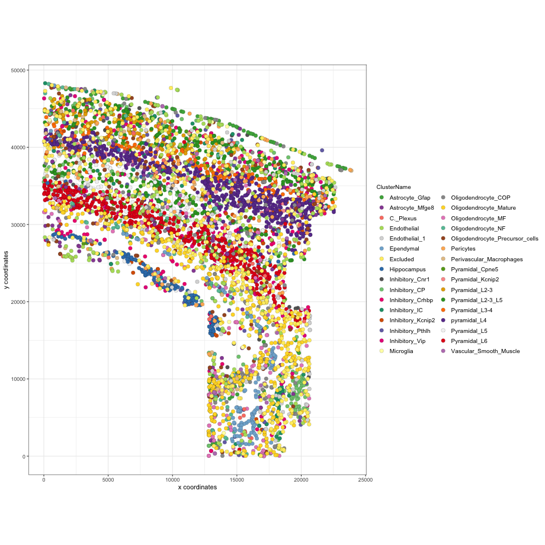
osmFISH spatial regions from paper
Dimension reduction
Select highly variable genes (HVG). Only 33 genes so use all genes.
Next run PCA on expression values (default), and then run UMAP and TSNE on PCA space (default)
osm_test <- runPCA(gobject = osm_test, expression_values = 'custom', scale_unit = F)
signPCA(gobject = osm_test, expression_values = 'custom')
plotPCA_2D(osm_test, save_param = list(save_folder = '3_DimRed', save_name = 'PCA_reduction', units = 'in'))
osm_test <- runUMAP(osm_test, dimensions_to_use = 1:31, expression_values = 'custom', n_threads = 2)
plotUMAP_2D(gobject = osm_test, save_param = list(save_folder = '3_DimRed', save_name = 'UMAP_reduction', units = 'in'))
osm_test <- runtSNE(osm_test, dimensions_to_use = 1:31, perplexity = 70, check_duplicates = F)
plotTSNE_2D(gobject = osm_test, save_param = list(save_folder = '3_DimRed', save_name = 'tSNE_reduction', units = 'in'))
PCA plots
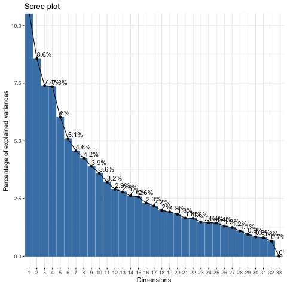
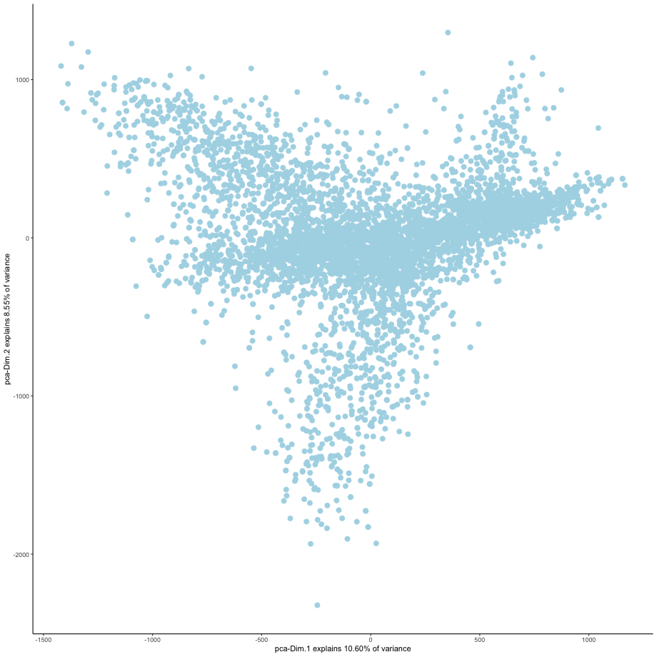
UMAP plot
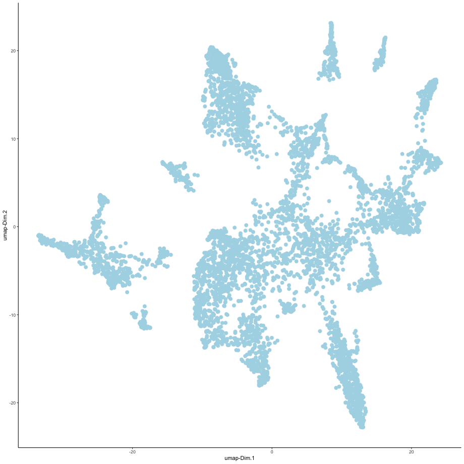
tSNE plot
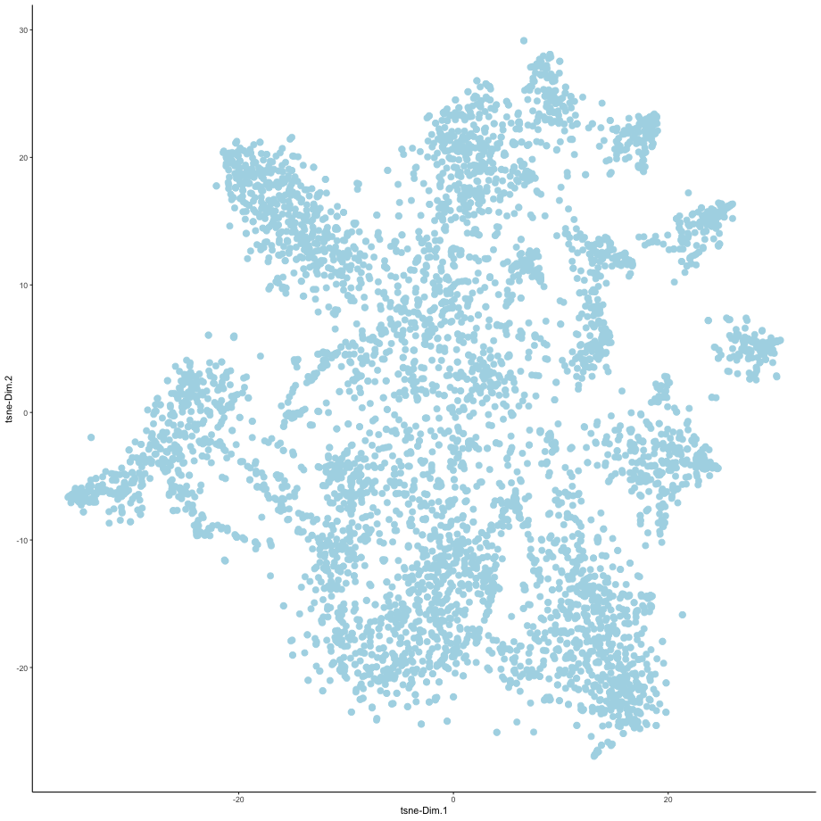
Clustering
Hierarchical clustering
osm_test = doHclust(gobject = osm_test, expression_values = 'custom', k = 34)
plotUMAP_2D(gobject = osm_test, cell_color = 'hclust', point_size = 2.5, show_NN_network = F, edge_alpha = 0.05, save_param = list(save_folder = '4_Cluster', save_name = 'UMAP_hclust', units = 'in'))
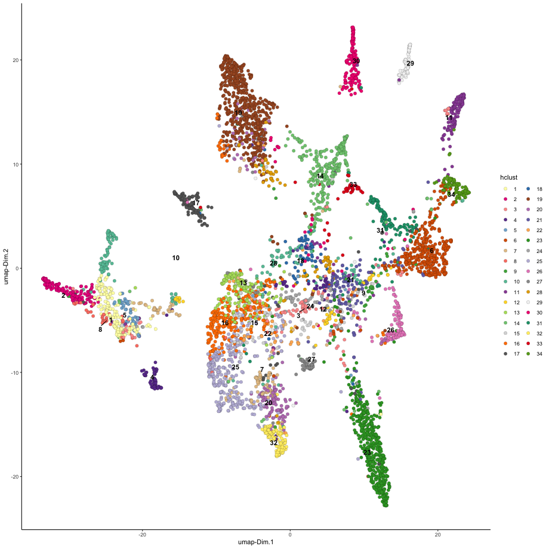
Kmeans clustering
osm_test = doKmeans(gobject = osm_test, expression_values = 'custom', centers = 32, nstart = 500)
plotUMAP_2D(gobject = osm_test, cell_color = 'kmeans', point_size = 2.5, show_NN_network = F, edge_alpha = 0.05, save_param = list(save_folder = '4_Cluster', save_name = 'UMAP_kmeans', units = 'in'))
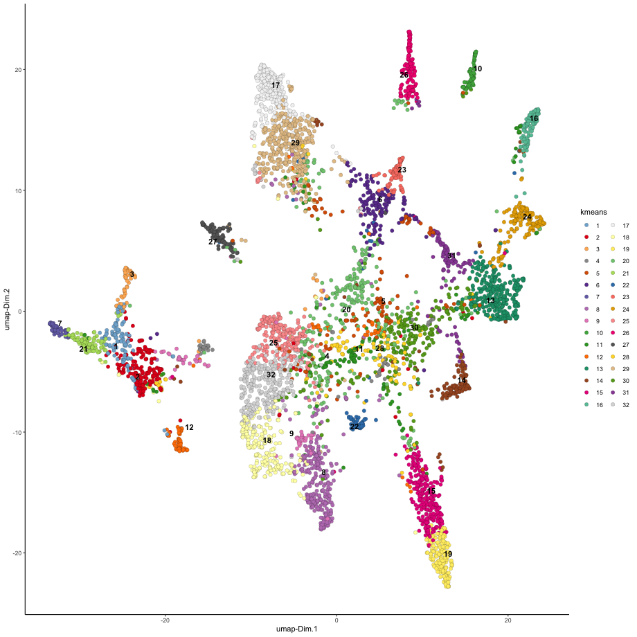
Leiden clustering - first build a SNN network
osm_test <- createNearestNetwork(gobject = osm_test, dimensions_to_use = 1:31, k = 15)
osm_test <- doLeidenCluster(gobject = osm_test, resolution = 0.05, n_iterations = 100)
plotUMAP_2D(gobject = osm_test, cell_color = 'leiden_clus', point_size = 2.5, show_NN_network = F, edge_alpha = 0.05, save_param = list(save_folder = '4_Cluster', save_name = 'UMAP_leiden', units = 'in'))
# merge small groups based on similarity
leiden_similarities = getClusterSimilarity(osm_test, expression_values = 'custom', cluster_column = 'leiden_clus')
osm_test = mergeClusters(osm_test, expression_values = 'custom', cluster_column = 'leiden_clus', new_cluster_name = 'leiden_clus_m', max_group_size = 30, force_min_group_size = 20)
plotUMAP_2D(gobject = osm_test, cell_color = 'leiden_clus_m', point_size = 2.5, show_NN_network = F, edge_alpha = 0.05, save_param = list(save_folder = '4_Cluster', save_name = 'UMAP_leiden_merged', units = 'in'))
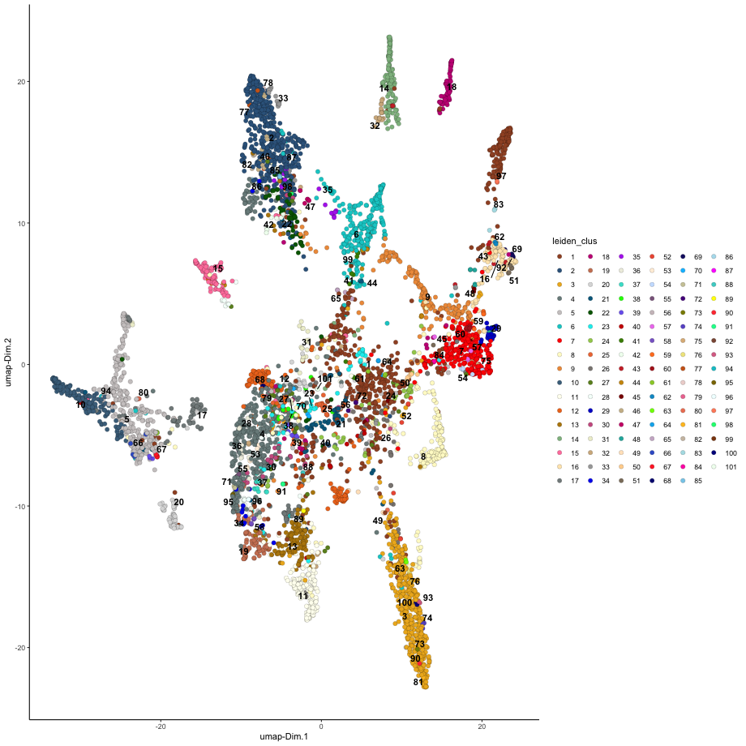
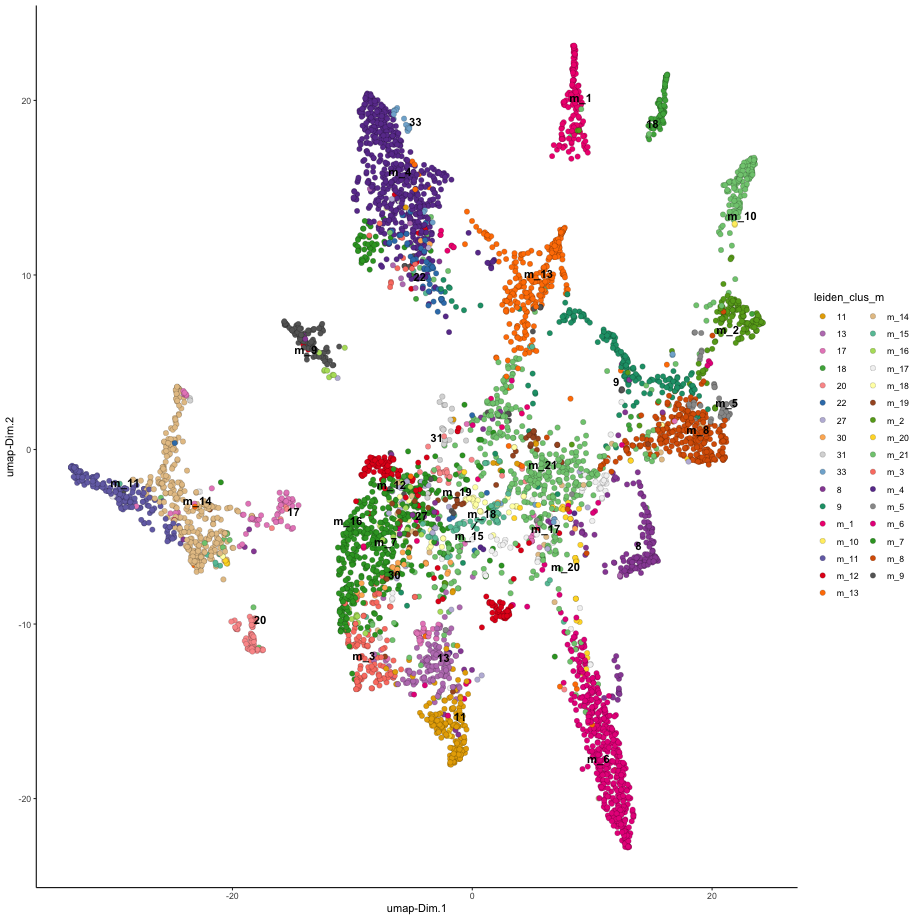
Show cluster relationships and plot the cluster dendrogram
showClusterHeatmap(gobject = osm_test, expression_values = 'custom', cluster_column = 'leiden_clus_m', save_param = list(save_name = 'heatmap', save_folder = '4_Cluster', units = 'cm'), row_names_gp = grid::gpar(fontsize = 6), column_names_gp = grid::gpar(fontsize = 6))
showClusterDendrogram(osm_test, cluster_column = 'leiden_clus_m', h = 1, rotate = T, save_param = list(save_name = 'dendro', save_folder = '4_Cluster', units = 'cm'))
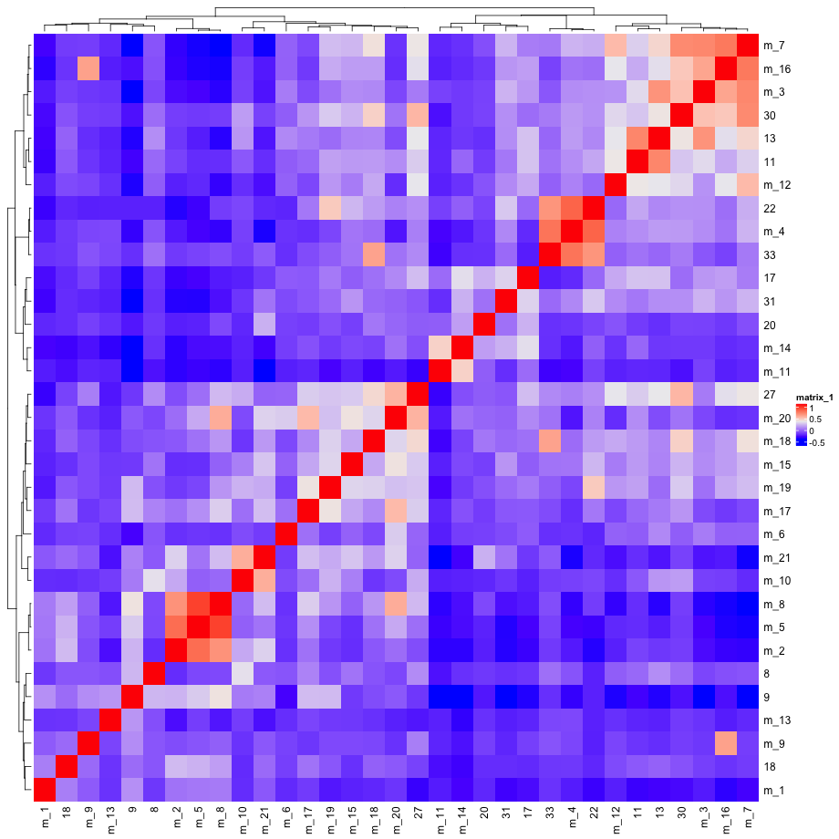
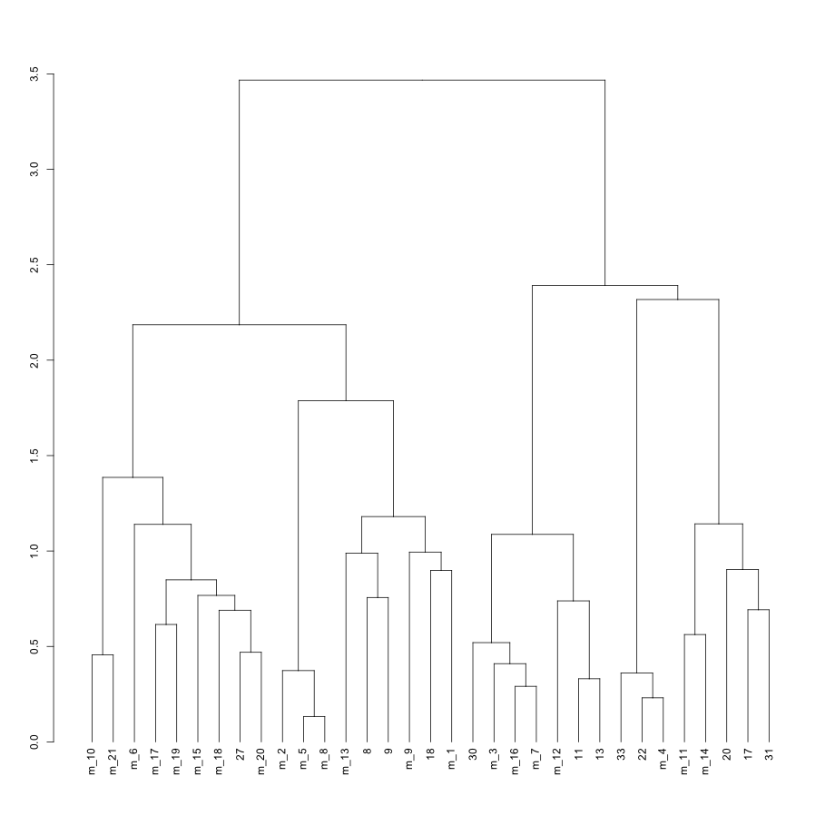
Differential expression
Split dendrogram nodes. Can be used to find DEGs at each split of a tree
dendsplits = getDendrogramSplits(gobject = osm_test, expression_values = 'custom', cluster_column = 'leiden_clus_m')
split_3_markers = findGiniMarkers(gobject = osm_test, expression_values = 'custom', cluster_column = 'leiden_clus_m', group_1 = unlist(dendsplits[3]$tree_1), group_2 = unlist(dendsplits[3]$tree_2))
## Individual populations ##
markers = findMarkers_one_vs_all(gobject = osm_test, method = 'scran', expression_values = 'custom', cluster_column = 'leiden_clus_m', min_genes = 2, rank_score = 2)
## violinplot
topgenes = markers[, head(.SD, 1), by = 'cluster_ID']$gene_ID
violinPlot(osm_test, genes = unique(topgenes), cluster_column = 'leiden_clus_m', expression_values = 'custom', strip_text = 5, strip_position = 'right', save_param = c(save_name = 'violinplot', save_folder = '6_DEG'))
## cluster heatmap
ranked_genes = c('Bmp4', 'Itpr2', 'Tmem2', 'Ctps', 'Plp1', 'Sox10','Foxj1', 'Aldoc', 'Gfap', 'Acta2', 'Mrc1', 'Vtn', 'Crhbp', 'Slc32a1', 'Gad2', 'Syt6', 'Serpinf1', 'Cpne5', 'Lamp5', 'Hexb', 'Kcnip2', 'Tbr1', 'Ttr', 'Apln', 'Anln', 'Crh', 'Vip', 'Cnr1', 'Pthlh', 'Rorb', 'Flt1', 'Mfge8', 'Pdgfra')
plotMetaDataHeatmap(osm_test, expression_values = 'custom', metadata_cols = c('leiden_clus_m'), custom_gene_order = ranked_genes, save_param = c(save_name = 'metaheatmap', save_folder = '6_DEG'))
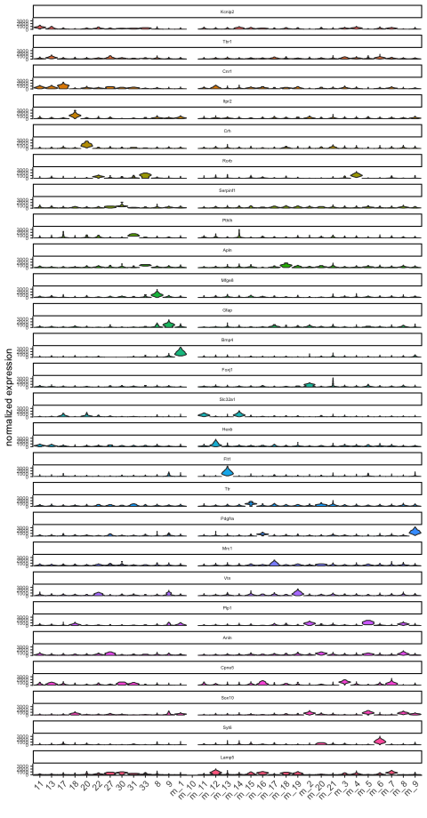
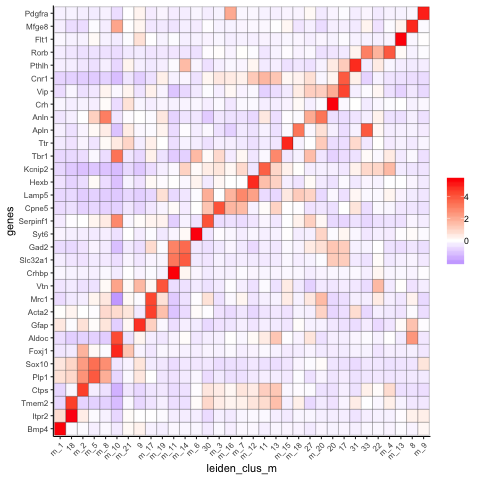
Cell type annotations
Create vector with names
clusters_SS_cortex = c('OOP', 'OL1', 'OL2', 'OL3', 'OL4',
'Ependymal', 'unknown', 'Astro_Gfap', 'vSMC', 'Pericytes',
'IN1', 'IN2', 'Pyr1', 'Astro', 'IN3',
'IN4', 'Pyr2', 'Miglia1', 'IN5', 'Pyr3',
'Choroid', 'Vend1', 'OL5', 'IN6', 'IN7',
'IN8', 'IN9', 'Pyr4', 'Pyr5', 'Pyr6',
'Vend2', 'Astro_Mfge8', 'OPC')
names(clusters_SS_cortex) = c('m_1', '18', 'm_2', 'm_5', 'm_8',
'm_10', 'm_21', '9', 'm_17', 'm_19',
'm_11', 'm_14', 'm_6', '30', 'm_3',
'm_16', 'm_7', 'm_12', '11', '13',
'm_15', 'm_18', '27', 'm_20', '20',
'17', '31', '33', '22', 'm_4',
'm_13', '8', 'm_9')
osm_test = annotateGiotto(gobject = osm_test, annotation_vector = clusters_SS_cortex, cluster_column = 'leiden_clus_m', name = 'leiden_clus_m_types')
spatDimPlot2D(gobject = osm_test, cell_color = 'leiden_clus_m_types',dim_point_size = 2, spatial_point_size = 2, save_param = c(save_name = 'annotation_leiden_merged_first', save_folder = '7_annotation'))
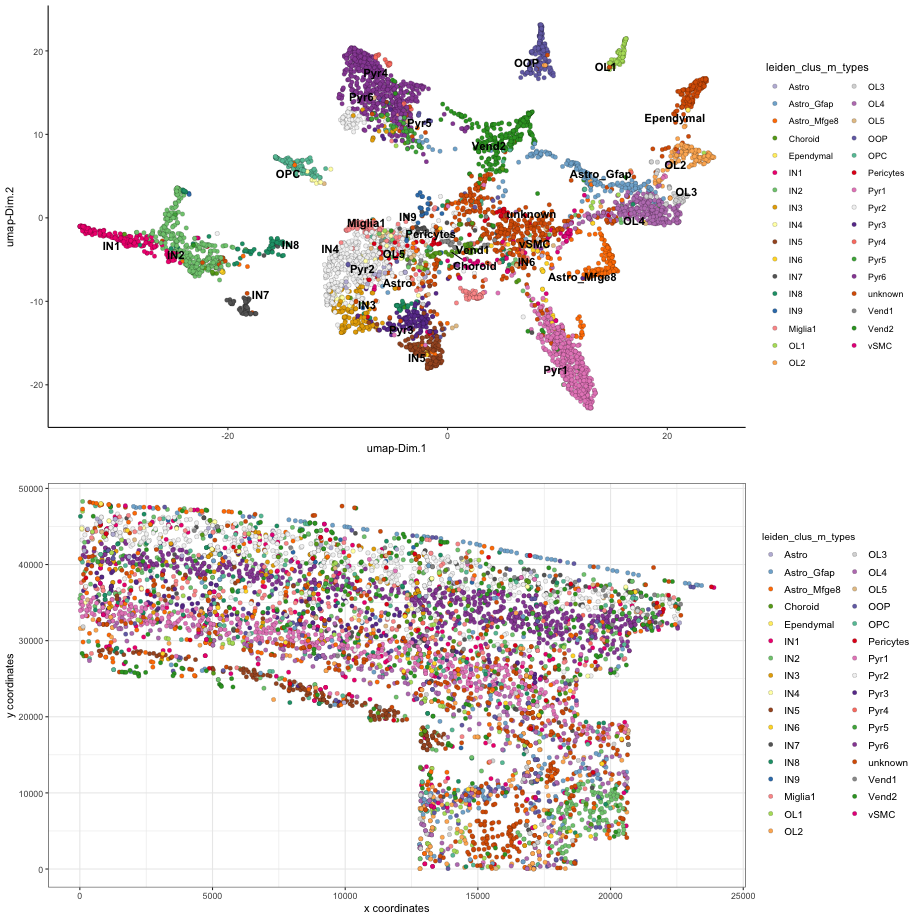
Compare clusters with osmFISH paper
clusters_det_SS_cortex = c('Olig_COP', 'Olig_NF', 'Olig_MF', 'Olig_mat', 'Olig_mat',
'Ependymal', 'unknown', 'Astro_Gfap', 'vSMC', 'Pericytes',
'Inh_Crhbp', 'Inh_IC', 'Pyr_L6', 'Periv_Macro', 'Pyr_Cpne5',
'unknown', 'Pyr_L2/3', 'Microglia', 'Hippocampus', 'Pyr_L5',
'Choroid', 'vEnd', 'unknown', 'Inh_Anln', 'Inh_Crh',
'Inh_Vip', 'Inh_Pthlh', 'Pyr_Apln', 'Pyr_Kcnip2', 'Pyr_L4',
'vEnd', 'Astro_Mfge8', 'Olig_precursor')
names(clusters_det_SS_cortex) = c('m_1', '18', 'm_2', 'm_5', 'm_8',
'm_10', 'm_21', '9', 'm_17', 'm_19',
'm_11', 'm_14', 'm_6', '30', 'm_3',
'm_16', 'm_7', 'm_12', '11', '13',
'm_15', 'm_18', '27', 'm_20', '20',
'17', '31', '33', '22', 'm_4',
'm_13', '8', 'm_9')
osm_test = annotateGiotto(gobject = osm_test, annotation_vector = clusters_det_SS_cortex, cluster_column = 'leiden_clus_m', name = 'det_cell_types')
spatDimPlot2D(gobject = osm_test, cell_color = 'det_cell_types',dim_point_size = 2, spatial_point_size = 2, save_param = c(save_name = 'annotation_leiden_merged_detailed', save_folder = '7_annotation'))
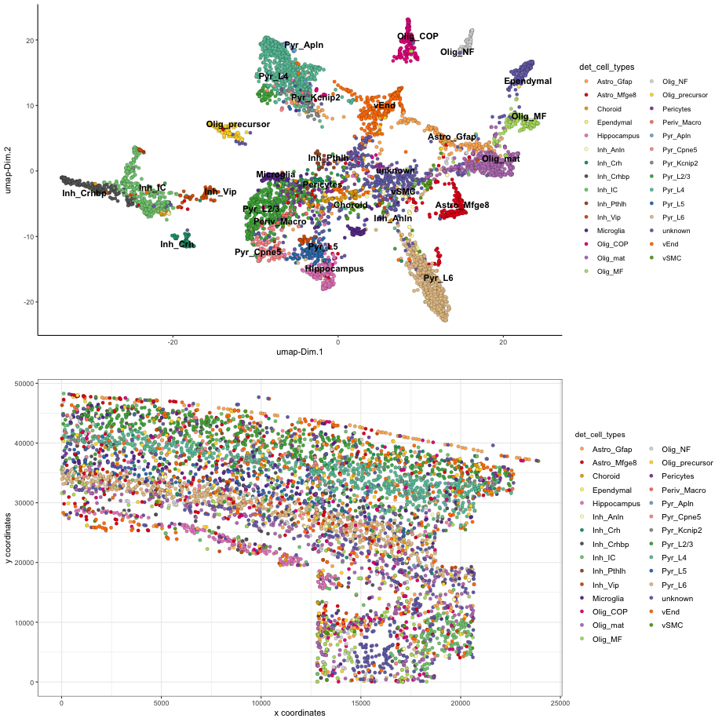
Coarse cell types
clusters_coarse_SS_cortex = c('Olig', 'Olig', 'Olig', 'Olig', 'Olig',
'Ependymal', 'unknown', 'Astro', 'vSMC', 'Pericytes',
'Inh', 'Inh', 'Pyr', 'Periv_Macro', 'Pyr',
'unknown', 'Pyr', 'Microglia', 'Hippocampus', 'Pyr',
'Choroid', 'vEnd', 'unknown', 'Inh', 'Inh',
'Inh', 'Inh', 'Pyr', 'Pyr', 'Pyr',
'vEnd', 'Astro', 'Olig')
names(clusters_coarse_SS_cortex) = c('Olig_COP', 'Olig_NF', 'Olig_MF', 'Olig_mat', 'Olig_mat',
'Ependymal', 'unknown', 'Astro_Gfap', 'vSMC', 'Pericytes',
'Inh_Crhbp', 'Inh_IC', 'Pyr_L6', 'Periv_Macro', 'Pyr_Cpne5',
'unknown', 'Pyr_L2/3', 'Microglia', 'Hippocampus', 'Pyr_L5',
'Choroid', 'vEnd', 'unknown', 'Inh_Anln', 'Inh_Crh',
'Inh_Vip', 'Inh_Pthlh', 'Pyr_Apln', 'Pyr_Kcnip2', 'Pyr_L4',
'vEnd', 'Astro_Mfge8', 'Olig_precursor')
osm_test = annotateGiotto(gobject = osm_test, annotation_vector = clusters_coarse_SS_cortex, cluster_column = 'det_cell_types', name = 'coarse_cell_types')
spatDimPlot2D(gobject = osm_test, cell_color = 'coarse_cell_types',dim_point_size = 2, spatial_point_size = 2, save_param = c(save_name = 'annotation_leiden_merged_coarse', save_folder = '7_annotation'))
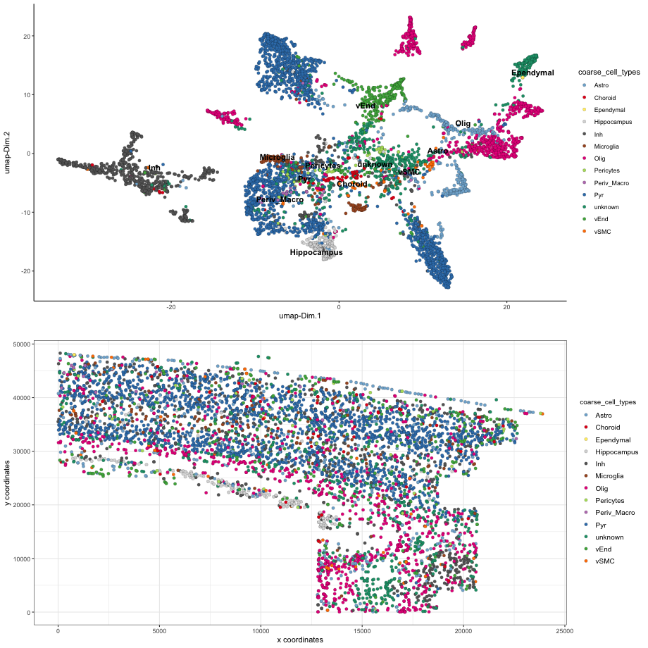
Spatial grid
osm_test <- createSpatialGrid(gobject = osm_test, sdimx_stepsize = 2000, sdimy_stepsize = 2000, minimum_padding = 0)
spatPlot2D(osm_test, cell_color = 'det_cell_types', show_grid = T, grid_color = 'lightblue', spatial_grid_name = 'spatial_grid', save_param = c(save_name = 'grid_det_cell_types', save_folder = '8_grid'))
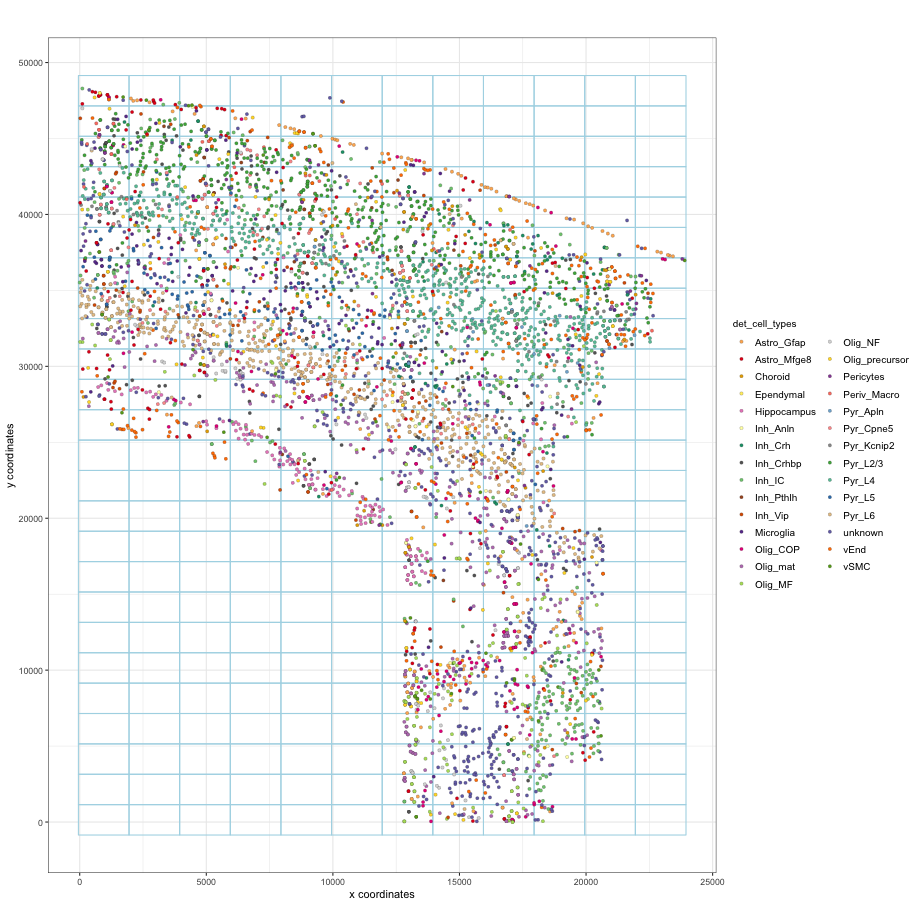
Spatial patterns
pattern_osm = detectSpatialPatterns(gobject = osm_test, expression_values = 'custom', spatial_grid_name = 'spatial_grid', min_cells_per_grid = 5, scale_unit = T, PC_zscore = 1, show_plot = T)
showPattern2D(osm_test, pattern_osm, dimension = 1, point_size = 4, save_param = c(save_name = 'pattern1_pca', save_folder = '8_grid'))
showPatternGenes(osm_test, pattern_osm, dimension = 1, save_plot = T, save_param = c(save_name = 'pattern1_genes', save_folder = '8_grid', base_height = 3, base_width = 3, dpi = 100))
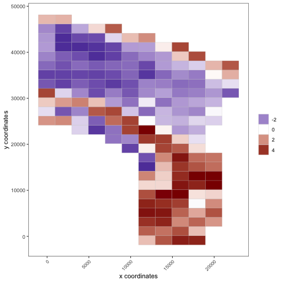
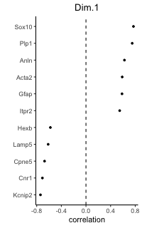
osm_test <- createSpatialNetwork(gobject = osm_test, k = 5)
spatPlot2D(gobject = osm_test, show_network = T, network_color = 'blue', spatial_network_name = 'spatial_network', point_size = 1, cell_color = 'det_cell_types', save_param = c(save_name = 'spatial_network_k10', save_folder = '9_spatial_network'))
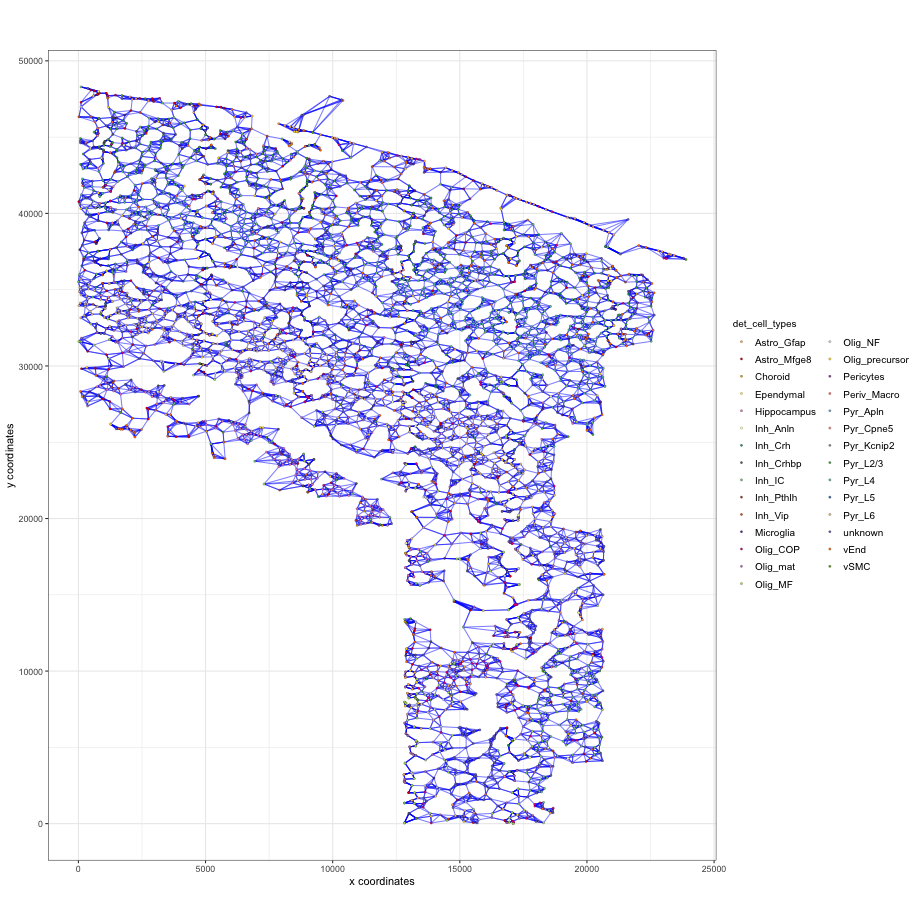
Spatial genes
There are three ways of doing spatial gene detection (by kmtest, by ranktest, and by silhouette metric)
kmtest = binGetSpatialGenes(osm_test, bin_method = 'kmeans', do_fisher_test = T, community_expectation = 5, spatial_network_name = 'spatial_network', verbose = T)
ranktest = binGetSpatialGenes(osm_test, bin_method = 'rank', do_fisher_test = T, community_expectation = 5, spatial_network_name = 'spatial_network', verbose = T)
spatial_genes = calculate_spatial_genes_python(gobject = osm_test, expression_values = 'scaled', python_path = my_python_path, rbp_p=0.99, examine_top=0.1)
spatDimGenePlot2D(osm_test, expression_values = 'normalized', genes = c('Rorb', 'Syt6', 'Gfap', 'Kcnip2'), plot_alignment = 'vertical', cow_n_col = 4, genes_high_color = 'red', genes_mid_color = 'white', genes_low_color = 'darkblue', midpoint = 4, save_param = c(save_name = 'spatial_genes_norm', save_folder = '10_spatial_genes', base_width = 16))
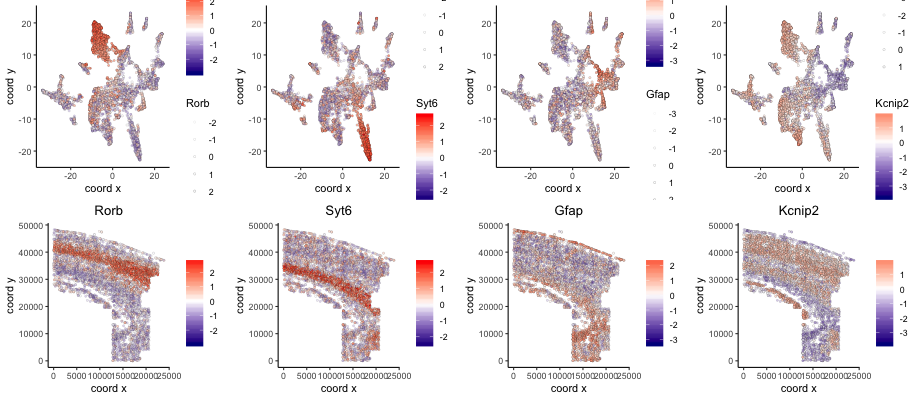
Hidden Markov random field
my_spatial_genes = spatial_genes[1:20]$genes
my_spatial_genes
[1] "Rorb" "Syt6" "Gfap" "Lamp5" "Plp1" "Sox10" "Cpne5"
[8] "Kcnip2" "Foxj1" "Tbr1" "Cnr1" "Slc32a1" "Hexb" "Itpr2"
[15] "Ttr" "Anln" "Ctps" "Gad2" "Mfge8" "Flt1"
Do HMRF with different betas
HMRF_spatial_genes = doHMRF(gobject = osm_test, expression_values = 'normalized', spatial_genes = my_spatial_genes, k = 10, betas = c(0, 0.5, 10), output_folder = paste0(hmrf_folder, '/', 'Spatial_genes/SG_top10_k10_scaled'), python_path = my_python_path, zscore="rowcol", tolerance=1e-5)
View results of HMRF
viewHMRFresults(gobject = osm_test, HMRFoutput = HMRF_spatial_genes, k = 10, betas_to_view = seq(0, 5, by = 0.5), point_size = 1)
## add HMRF result of interest to giotto object
osm_test = addHMRF(gobject = osm_test, HMRFoutput = HMRF_spatial_genes, k = 10, betas_to_add = c(0, 0.5, 1.0, 1.5, 2.0), hmrf_name = 'HMRF')
Visualize b = 0, no information from cell neighbors
spatPlot2D(gobject = osm_test, cell_color = 'HMRF_k10_b.0', point_size = 1, save_param = c(save_name = 'HMRF_k10_b.0', save_folder = '11_HMRF'))
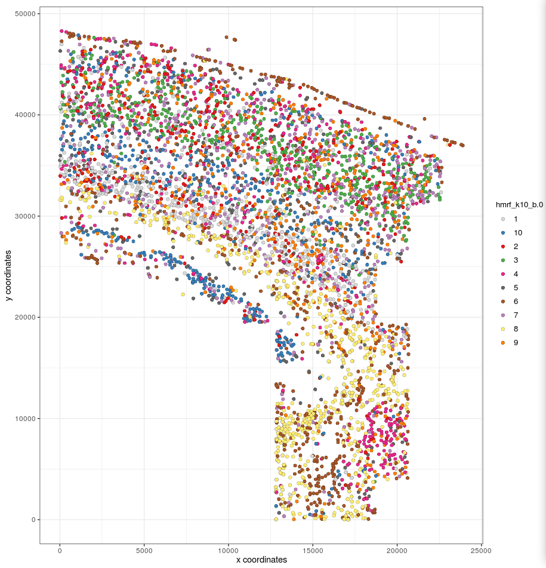
Visualize b = 1.0
spatPlot2D(gobject = osm_test, cell_color = 'HMRF_k10_b.1.0', point_size = 1, save_param = c(save_name = 'HMRF_k10_b.1.0', save_folder = '11_HMRF'))
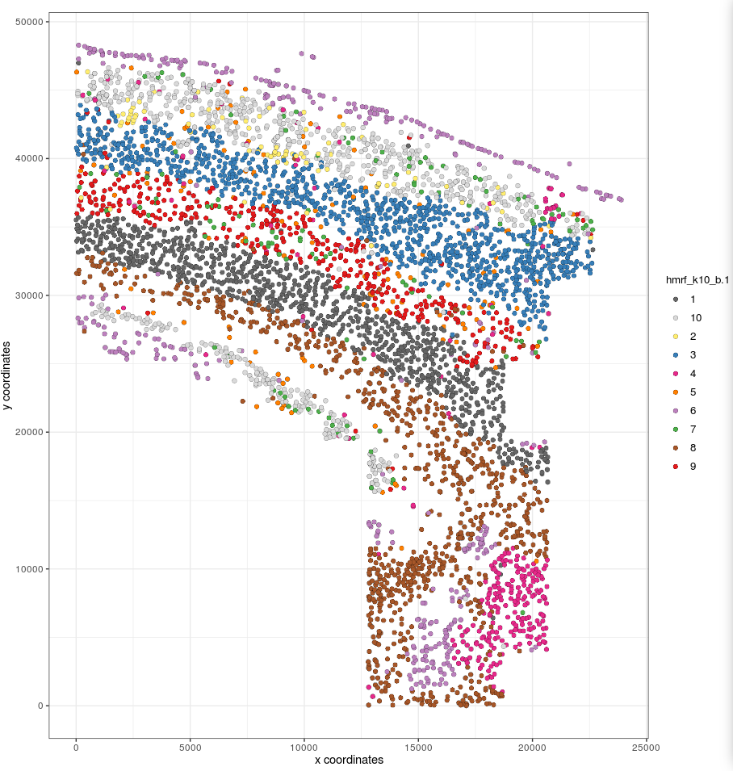
Cell cell preferential proximity
Calculate frequently seen proximities
cell_proximities = cellProximityEnrichment(gobject = osm_test, cluster_column = 'det_cell_types', spatial_network_name = 'spatial_network', number_of_simulations = 400)
## barplot
cellProximityBarplot(gobject = osm_test, CPscore = cell_proximities, min_orig_ints = 25, min_sim_ints = 25, save_param = c(save_name = 'barplot_cell_cell_enrichment', save_folder = '12_cell_proxim'))
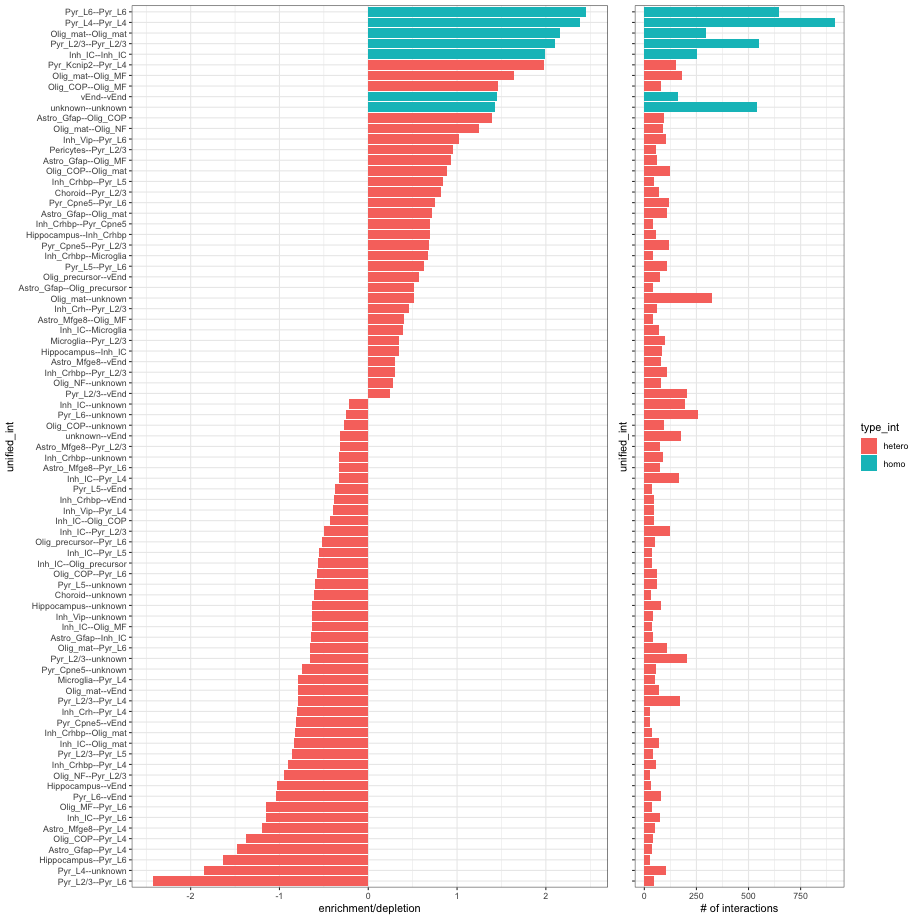
cellProximityHeatmap(gobject = osm_test, CPscore = cell_proximities, order_cell_types = T, scale = T, color_breaks = c(-1.5, 0, 1.5), color_names = c('blue', 'white', 'red'), save_param = c(save_name = 'heatmap_cell_cell_enrichment', save_folder = '12_cell_proxim', unit = 'in'))
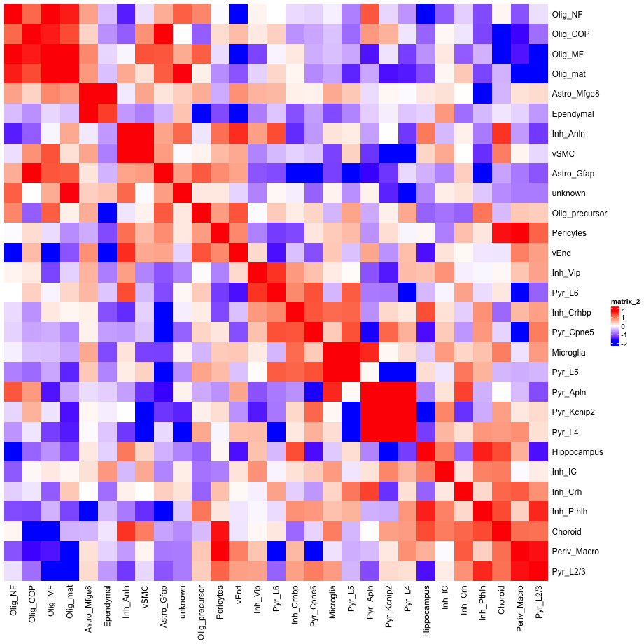
cellProximityNetwork(gobject = osm_test, CPscore = cell_proximities, remove_self_edges = T, only_show_enrichment_edges = T, save_param = c(save_name = 'network_cell_cell_enrichment', save_folder = '12_cell_proxim'))
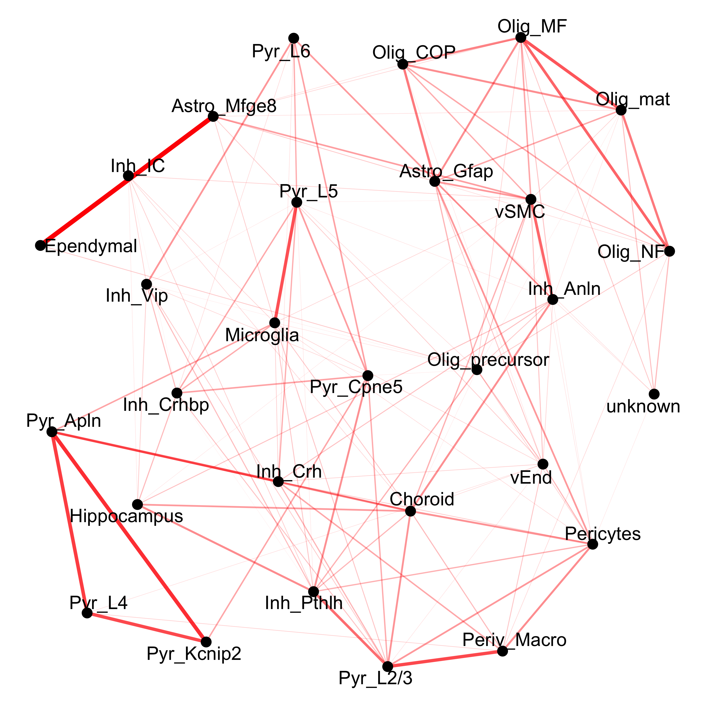
Visualization
spec_interaction = "Astro_Gfap--Olig_mat"
cellProximitySpatPlot2D(gobject = osm_test, interaction_name = spec_interaction, cluster_column = 'det_cell_types', cell_color = 'det_cell_types', coord_fix_ratio = 0.5, point_size_select = 4, point_size_other = 2, save_param = c(save_name = 'cell_cell_enrichment_selected', save_folder = '12_cell_proxim'))
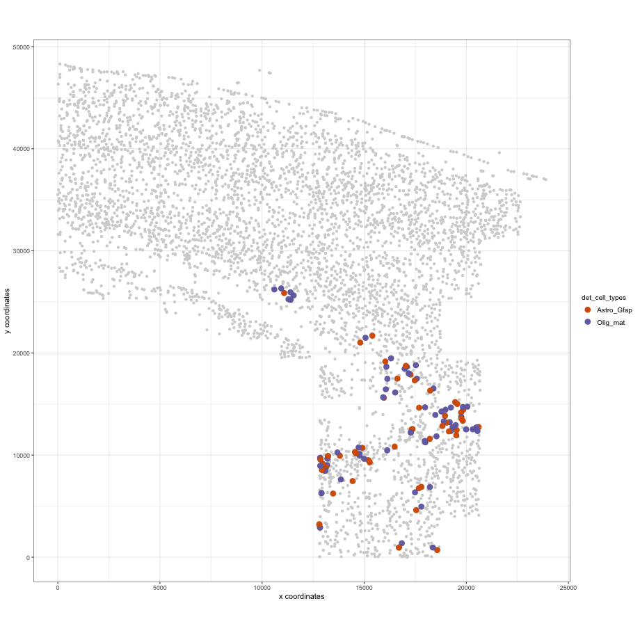